Show Code
pacman::p_load(
tidyverse,
ggdist,
ggridges,
ggstatsplot,
ggmosaic,
patchwork,
scales,
knitr,
corrplot,
forcats,
ggrepel,
ggthemes
)Lei Yuhe
May 17, 2026
May 24, 2026
The following R libraries are used:
| Library | Purpose |
|---|---|
tidyverse |
Data wrangling (dplyr, tidyr) and base visualisation (ggplot2) |
ggdist |
Visualising distributions and uncertainty (half-eye plots, dot plots) |
ggridges |
Density ridge plots for comparing distributions across groups |
ggstatsplot |
Statistical visualisations with built-in hypothesis testing |
ggmosaic |
Mosaic plots for categorical variable relationships |
patchwork |
Composing multiple ggplot objects into one figure |
scales |
Formatting axis labels (percentages, currency) |
knitr |
Rendering tables neatly within the report |
corrplot |
Correlation matrix visualisation |
forcats |
Factor reordering for cleaner categorical plots |
The dataset is from Mendeley Data. It contains policy-level records from a Spanish non-life motor vehicle insurer.
Rows: 354,140
Columns: 47
$ insured_id <dbl> 1, 2, 2, 2, 3, 3, 3, 4, 4, 4, 5, 5, 5, 6, …
$ year <dbl> 2022, 2022, 2023, 2024, 2022, 2023, 2024, …
$ policy_type <chr> "COMP_E", "COMP_E", "COMP_E", "COMP_E", "C…
$ policy_status <chr> "C", "A", "A", "A", "A", "A", "A", "A", "A…
$ business_type <chr> "NB", "P", "P", "P", "NB", "P", "P", "NB",…
$ payment_frequency <chr> "A", "A", "A", "A", "S", "S", "S", "A", "A…
$ bonus_score <chr> "G", "G", "G", "G", "G", "G", "G", "G", "G…
$ driver_age <dbl> 48, 43, 44, 45, 45, 46, 47, 32, 33, 34, 39…
$ vehicle_age <dbl> 22, 24, 25, 26, 26, 27, 28, 12, 13, 14, 20…
$ age_driving_licence <dbl> 26, 19, 19, 18, 19, 19, 19, 19, 19, 19, 19…
$ fuel_type <chr> "G", "D", "D", "D", "D", "D", "D", "D", "D…
$ vehicle_value <dbl> 149511.44, 65065.12, 65065.12, 65065.12, 5…
$ seats <dbl> 4, 8, 8, 8, 7, 7, 7, 5, 5, 5, 5, 5, 5, 5, …
$ power_to_weight_ratio <dbl> 3.92, 10.15, 10.15, 10.15, 9.19, 9.19, 9.1…
$ vehicle_brand <chr> "PORSCHE", "MERCEDES", "MERCEDES", "MERCED…
$ municipality_type <chr> "I", "I", "I", "I", "I", "I", "I", "I", "I…
$ circulation_area <chr> "U", "U", "U", "U", "R", "R", "R", "R", "R…
$ total_premium <dbl> 279.5576, 546.6234, 548.7526, 584.6324, 68…
$ liability_premium <dbl> 30.60232, 114.33336, 110.66689, 122.09253,…
$ property_damage_premium <dbl> 121.9127, 303.1060, 304.9560, 305.2251, 35…
$ theft_premium <dbl> 112.361489, 80.784824, 83.521384, 107.8868…
$ fire_premium <dbl> 3.832441, 7.826861, 6.151465, 5.842892, 7.…
$ glass_premium <dbl> 8.305788, 30.091751, 32.861626, 31.101584,…
$ legal_protection_premium <dbl> 2.043622, 7.812747, 7.655637, 10.084173, 6…
$ occupants_premium <dbl> 0.4992053, 2.6679084, 2.9395659, 2.3992827…
$ total_claims <dbl> 0, 0, 1, 2, 0, 0, 0, 0, 0, 0, 0, 0, 0, 5, …
$ liability_claims <dbl> 0, 0, 1, 1, 0, 0, 0, 0, 0, 0, 0, 0, 0, 0, …
$ liability_property_claims <dbl> 0, 0, 1, 1, 0, 0, 0, 0, 0, 0, 0, 0, 0, 0, …
$ liability_injury_claims <dbl> 0, 0, 0, 0, 0, 0, 0, 0, 0, 0, 0, 0, 0, 0, …
$ property_claims <dbl> 0, 0, 0, 1, 0, 0, 0, 0, 0, 0, 0, 0, 0, 5, …
$ theft_claims <dbl> 0, 0, 0, 0, 0, 0, 0, 0, 0, 0, 0, 0, 0, 0, …
$ fire_claims <dbl> 0, 0, 0, 0, 0, 0, 0, 0, 0, 0, 0, 0, 0, 0, …
$ glass_claims <dbl> 0, 0, 0, 0, 0, 0, 0, 0, 0, 0, 0, 0, 0, 0, …
$ legal_protection_claims <dbl> 0, 0, 0, 0, 0, 0, 0, 0, 0, 0, 0, 0, 0, 0, …
$ occupants_claims <dbl> 0, 0, 0, 0, 0, 0, 0, 0, 0, 0, 0, 0, 0, 0, …
$ total_incurred <dbl> 0.000, 0.000, 233.013, 2586.361, 0.000, 0.…
$ liability_incurred <dbl> 0.000, 0.000, 233.013, 1035.000, 0.000, 0.…
$ liability_property_incurred <dbl> 0.000, 0.000, 233.013, 1035.000, 0.000, 0.…
$ liability_injury_incurred <dbl> 0.000, 0.000, 0.000, 0.000, 0.000, 0.000, …
$ property_incurred <dbl> 0.000, 0.000, 0.000, 1551.361, 0.000, 0.00…
$ theft_incurred <dbl> 0, 0, 0, 0, 0, 0, 0, 0, 0, 0, 0, 0, 0, 0, …
$ fire_incurred <dbl> 0, 0, 0, 0, 0, 0, 0, 0, 0, 0, 0, 0, 0, 0, …
$ glass_incurred <dbl> 0, 0, 0, 0, 0, 0, 0, 0, 0, 0, 0, 0, 0, 0, …
$ legal_protection_incurred <dbl> 0, 0, 0, 0, 0, 0, 0, 0, 0, 0, 0, 0, 0, 0, …
$ occupants_incurred <dbl> 0, 0, 0, 0, 0, 0, 0, 0, 0, 0, 0, 0, 0, 0, …
$ total_exposure <dbl> 0.09863014, 1.00000000, 1.00000000, 1.0000…
$ liability_exposure <dbl> 0.09863014, 1.00000000, 1.00000000, 1.0000…Based on the dataset, the key variables are:
| Variable | Type | Description |
|---|---|---|
insured_id |
Identifier | Unique policyholder identifier |
year |
Numerical | Policy year (2022–2024) |
policy_type |
Categorical | Coverage type (COMP_E, COMP_N, CC, TPG, etc.) |
policy_status |
Categorical | Policy status (A = Active, C = Cancelled) |
business_type |
Categorical | New business (NB) or renewal (P) |
payment_frequency |
Categorical | Payment frequency (A = Annual, S = Semi-annual, etc.) |
bonus_score |
Categorical | Bonus-malus score reflecting claim history |
driver_age |
Numerical | Age of the main driver (years) |
vehicle_age |
Numerical | Age of the insured vehicle (years) |
age_driving_licence |
Numerical | Years since driving licence obtained |
fuel_type |
Categorical | Fuel type (G = Gasoline, D = Diesel, etc.) |
vehicle_value |
Numerical | Market value of insured vehicle (EUR) |
seats |
Numerical | Number of seats in the vehicle |
power_to_weight_ratio |
Numerical | Engine power-to-weight ratio |
vehicle_brand |
Categorical | Vehicle manufacturer |
municipality_type |
Categorical | Urban (I) or rural (C) classification |
circulation_area |
Categorical | Urban (U) or rural (R) circulation area |
total_premium |
Numerical | Total gross written premium (EUR) |
total_claims |
Numerical | Total number of claims across all coverage types |
total_incurred |
Numerical | Total incurred claim cost (EUR) |
total_exposure |
Numerical | Policy exposure (fraction of year in force) |
Before visualisation, two target variables were derived:
claimed amount / premium, which measures profitability. A ratio > 1 indicates the insurer is paying out more than it earns.number of claims / exposure, which measures volatility by normalising claims to exposure.insurance <- insurance %>%
mutate(
# Core profitability metric
loss_ratio = total_incurred / total_premium,
# Core volatility metric
claim_frequency = total_claims / total_exposure,
# Whether the policy had at least one claim
had_claim = if_else(total_claims > 0, "With Claim", "No Claim"),
# Driver age bands
driver_age_group = cut(
driver_age,
breaks = c(17, 25, 35, 45, 55, 65, Inf),
labels = c("18-25", "26-35", "36-45", "46-55", "56-65", "65+"),
right = TRUE
),
# Vehicle age bands
vehicle_age_group = cut(
vehicle_age,
breaks = c(-1, 2, 5, 10, 15, Inf),
labels = c("0-2 yrs", "3-5 yrs", "6-10 yrs", "11-15 yrs", "15+ yrs"),
right = TRUE
),
# Simplify circulation area labels
area_label = case_when(
circulation_area == "U" ~ "Urban",
circulation_area == "R" ~ "Rural",
TRUE ~ circulation_area
),
# Simplify fuel type labels
fuel_label = case_when(
fuel_type == "G" ~ "Gasoline",
fuel_type == "D" ~ "Diesel",
fuel_type == "E" ~ "Electric",
fuel_type == "H" ~ "Hybrid",
TRUE ~ fuel_type
),
# Simplify business type labels
business_label = case_when(
business_type == "NB" ~ "New Business",
business_type == "P" ~ "Renewal",
TRUE ~ business_type
)
)# Missing values
missing_summary <- insurance %>%
summarise(across(everything(), ~ sum(is.na(.)))) %>%
pivot_longer(everything(),
names_to = "Variable",
values_to = "Missing_Count") %>%
filter(Missing_Count > 0) %>%
arrange(desc(Missing_Count))
if (nrow(missing_summary) == 0) {
cat("No missing values detected.\n")
} else {
kable(missing_summary, caption = "Variables with Missing Values")
}| Variable | Missing_Count |
|---|---|
| fuel_type | 1287 |
| fuel_label | 1287 |
| vehicle_value | 513 |
| loss_ratio | 48 |
| claim_frequency | 48 |
| vehicle_age | 2 |
| age_driving_licence | 2 |
| vehicle_age_group | 2 |
| driver_age | vehicle_age | vehicle_value | total_premium | total_incurred | total_claims | total_exposure | loss_ratio | claim_frequency | |
|---|---|---|---|---|---|---|---|---|---|
| Min. :18.00 | Min. : 0.00 | Min. : 1630 | Min. : 0.0 | Min. : 0.0 | Min. : 0.0000 | Min. :0.0000 | Min. : 0 | Min. : 0 | |
| 1st Qu.:39.00 | 1st Qu.:17.00 | 1st Qu.: 18608 | 1st Qu.: 146.1 | 1st Qu.: 0.0 | 1st Qu.: 0.0000 | 1st Qu.:0.4438 | 1st Qu.: 0 | 1st Qu.: 0 | |
| Median :48.00 | Median :25.00 | Median : 24730 | Median : 257.9 | Median : 0.0 | Median : 0.0000 | Median :0.8384 | Median : 0 | Median : 0 | |
| Mean :49.01 | Mean :25.92 | Mean : 26977 | Mean : 296.7 | Mean : 208.6 | Mean : 0.2177 | Mean :0.7069 | Mean :Inf | Mean :Inf | |
| 3rd Qu.:58.00 | 3rd Qu.:35.00 | 3rd Qu.: 32252 | 3rd Qu.: 385.0 | 3rd Qu.: 0.0 | 3rd Qu.: 0.0000 | 3rd Qu.:1.0000 | 3rd Qu.: 0 | 3rd Qu.: 0 | |
| Max. :90.00 | Max. :68.00 | Max. :374034 | Max. :5107.6 | Max. :571128.3 | Max. :18.0000 | Max. :1.0000 | Max. :Inf | Max. :Inf | |
| NA | NA’s :2 | NA’s :513 | NA | NA | NA | NA | NA’s :48 | NA’s :48 |
Loss Ratio 99th percentile: 12.3654 Claim Frequency 99th percentile: 5 Policies with extreme LR (> 99th pct): 3541 Policies with extreme CF (> 99th pct): 3052 theme_ins <- theme_minimal(base_size = 12) +
theme(
plot.title = element_text(face = "bold", size = 13),
plot.subtitle = element_text(size = 10, colour = "grey40"),
axis.title = element_text(size = 10),
panel.grid.minor = element_blank(),
legend.position = "bottom"
)
# Colour palettes
policy_colours <- c(
"COMP_E" = "#4E79A7", "COMP_N" = "#F28E2B",
"CC" = "#59A14F", "TPG" = "#E15759",
"TP" = "#76B7B2"
)
fuel_colours <- c(
"Gasoline" = "#4E79A7", "Diesel" = "#F28E2B",
"Electric" = "#59A14F", "Hybrid" = "#E15759"
)p_prem_hist <- ggplot(ins_clean, aes(x = total_premium)) +
geom_histogram(aes(y = after_stat(density)),
bins = 60, fill = "#4E79A7",
colour = "white", alpha = 0.85) +
geom_density(colour = "#E15759", linewidth = 1) +
scale_x_continuous(labels = label_dollar(prefix = "€")) +
labs(title = "Distribution of Total Premium",
subtitle = "Right-skewed; most policies priced under €1,000",
x = "Total Premium (EUR)", y = "Density") +
theme_ins
p_prem_box <- ggplot(ins_clean, aes(y = total_premium, x = "")) +
geom_violin(fill = "#4E79A7", alpha = 0.5) +
geom_boxplot(width = 0.12, fill = "white", outlier.shape = NA) +
scale_y_continuous(labels = label_dollar(prefix = "€")) +
coord_flip() +
labs(x = NULL, y = "Total Premium (EUR)", title = "Spread") +
theme_ins
p_prem_hist / p_prem_box + plot_layout(heights = c(3, 1))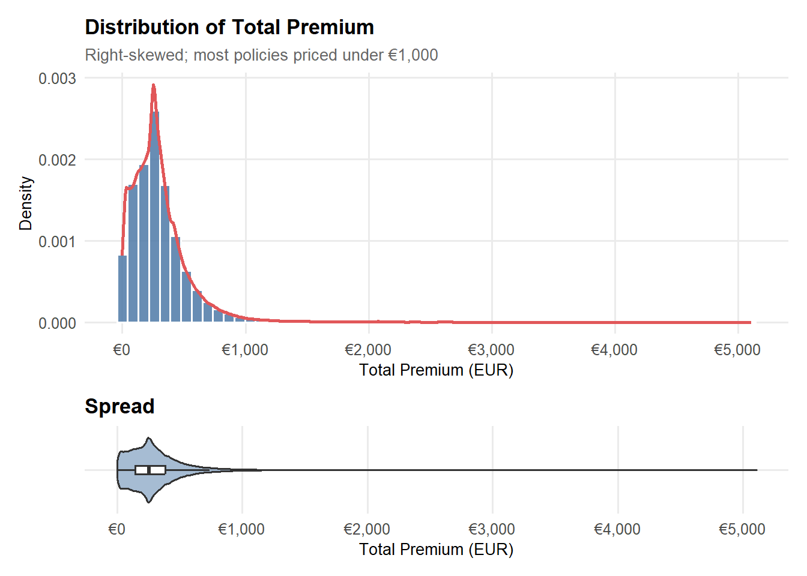
ins_claimants <- ins_clean %>% filter(total_claims > 0)
p_inc_raw <- ggplot(ins_claimants, aes(x = total_incurred)) +
geom_histogram(aes(y = after_stat(density)),
bins = 60, fill = "#E15759",
colour = "white", alpha = 0.85) +
geom_density(colour = "#4E79A7", linewidth = 1) +
scale_x_continuous(labels = label_dollar(prefix = "€")) +
labs(title = "Raw Total Incurred (Claimants Only)",
subtitle = "Extreme right skew; most claims are small",
x = "Total Incurred (EUR)", y = "Density") +
theme_ins
p_inc_log <- ggplot(ins_claimants, aes(x = log1p(total_incurred))) +
geom_histogram(aes(y = after_stat(density)),
bins = 50, fill = "#F28E2B",
colour = "white", alpha = 0.85) +
geom_density(colour = "#4E79A7", linewidth = 1) +
labs(title = "Log-Transformed Total Incurred",
subtitle = "Log scale reveals approximate log-normal structure",
x = "log(Total Incurred + 1)", y = "Density") +
theme_ins
p_inc_raw + p_inc_log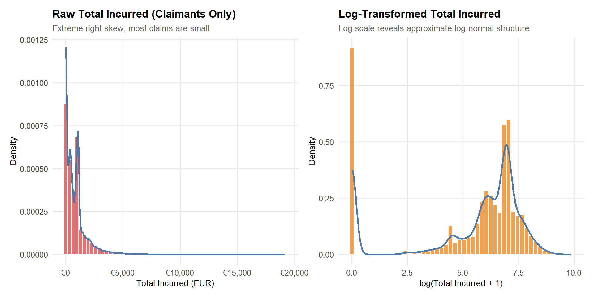
ggplot(ins_clean, aes(x = loss_ratio)) +
geom_histogram(
aes(y = after_stat(density), fill = after_stat(x) > 1),
bins = 80, colour = "white", alpha = 0.85
) +
scale_fill_manual(
values = c("FALSE" = "#59A14F", "TRUE" = "#E15759"),
labels = c("Profitable (LR < 1)", "Unprofitable (LR ≥ 1)"),
name = NULL
) +
geom_vline(xintercept = 1, linetype = "dashed",
colour = "black", linewidth = 0.9) +
geom_density(colour = "grey30", linewidth = 0.8) +
annotate("text", x = 1.05, y = Inf, vjust = 2, hjust = 0,
label = "Break-even (LR = 1)", size = 3.5, colour = "grey30") +
scale_x_continuous(labels = percent_format()) +
labs(title = "Distribution of Loss Ratio Across Policies",
subtitle = "Policies with LR > 1 represent net losses to the insurer",
x = "Loss Ratio", y = "Density") +
theme_ins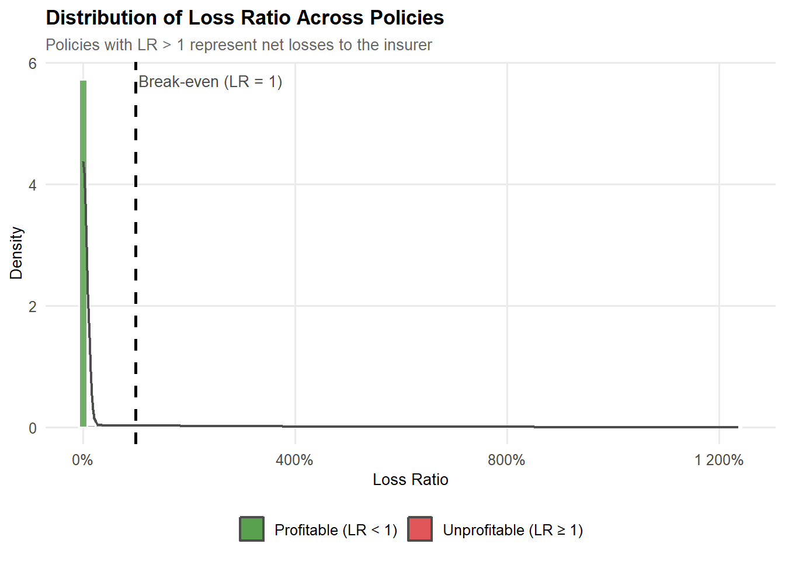
p_driver <- ggplot(ins_clean, aes(x = driver_age)) +
geom_histogram(bins = 40, fill = "#4E79A7",
colour = "white", alpha = 0.85) +
labs(title = "Driver Age Distribution",
subtitle = "Bell-shaped; centred around middle-aged drivers",
x = "Driver Age (years)", y = "Count") +
theme_ins
p_vehicle <- ggplot(ins_clean, aes(x = vehicle_age)) +
geom_histogram(bins = 30, fill = "#F28E2B",
colour = "white", alpha = 0.85) +
labs(title = "Vehicle Age Distribution",
subtitle = "Right-skewed; portfolio skews toward newer vehicles",
x = "Vehicle Age (years)", y = "Count") +
theme_ins
p_driver + p_vehicle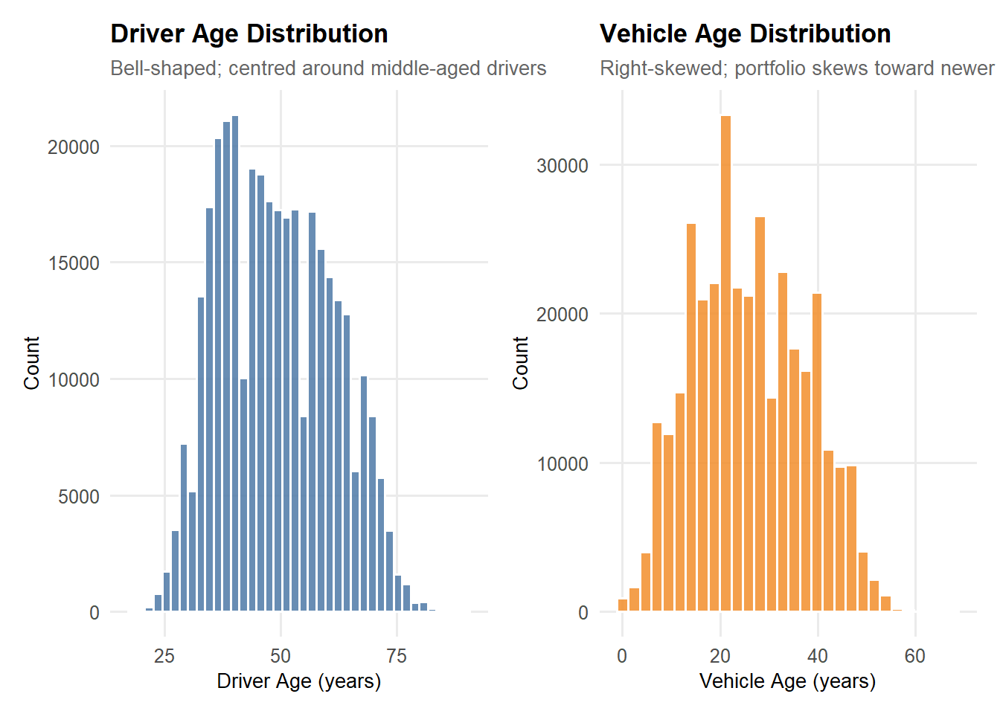
vv_upper <- quantile(ins_clean$vehicle_value, 0.99, na.rm = TRUE)
ggplot(ins_clean %>% filter(vehicle_value <= vv_upper),
aes(x = vehicle_value)) +
geom_histogram(aes(y = after_stat(density)), bins = 60,
fill = "#76B7B2", colour = "white", alpha = 0.85) +
geom_density(colour = "#E15759", linewidth = 1) +
scale_x_continuous(labels = label_dollar(prefix = "€")) +
labs(title = "Vehicle Value Distribution (up to 99th percentile)",
subtitle = "Wide spread; luxury brands (Porsche, Mercedes) create a long tail",
x = "Vehicle Value (EUR)", y = "Density") +
theme_ins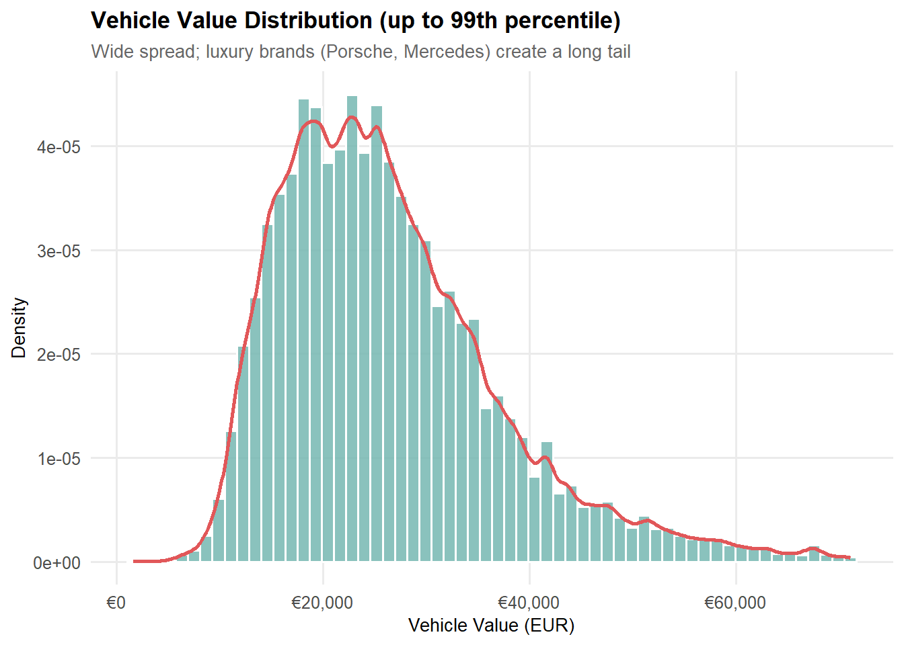
p_type_count <- ins_clean %>%
count(policy_type) %>%
mutate(policy_type = fct_reorder(policy_type, n)) %>%
ggplot(aes(x = n, y = policy_type, fill = policy_type)) +
geom_col(show.legend = FALSE) +
geom_text(aes(label = comma(n)), hjust = -0.1, size = 3.5) +
scale_fill_manual(values = policy_colours) +
scale_x_continuous(expand = expansion(mult = c(0, 0.15))) +
labs(title = "Policy Count by Policy Type",
x = "Number of Policies", y = NULL) +
theme_ins
p_type_prem <- ins_clean %>%
group_by(policy_type) %>%
summarise(total = sum(total_premium)) %>%
mutate(
policy_type = fct_reorder(policy_type, total),
pct = total / sum(total)
) %>%
ggplot(aes(x = total, y = policy_type, fill = policy_type)) +
geom_col(show.legend = FALSE) +
geom_text(aes(label = percent(pct, accuracy = 0.1)), hjust = -0.1, size = 3.5) +
scale_fill_manual(values = policy_colours) +
scale_x_continuous(labels = label_dollar(prefix = "€", suffix = "M", scale = 1e-6),
expand = expansion(mult = c(0, 0.15))) +
labs(title = "Total Premium by Policy Type",
x = "Total Premium (EUR Millions)", y = NULL) +
theme_ins
p_type_count + p_type_prem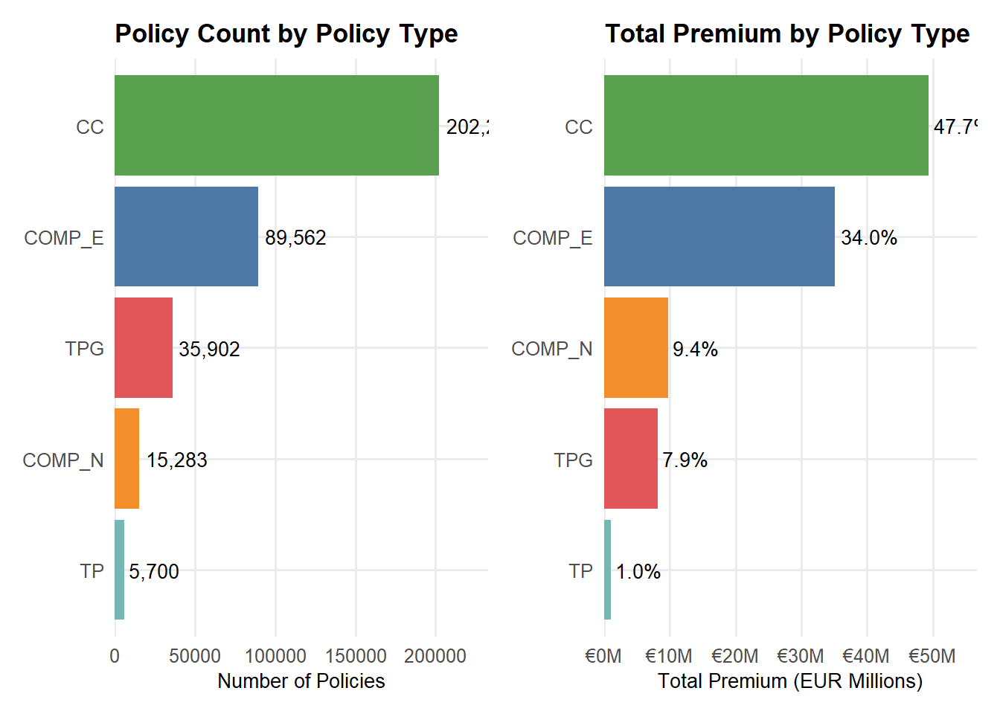
p_biz <- ins_clean %>%
count(business_label) %>%
mutate(pct = n / sum(n)) %>%
ggplot(aes(x = "", y = pct, fill = business_label)) +
geom_col(width = 0.5) +
geom_text(aes(label = paste0(business_label, "\n", percent(pct, accuracy = 0.1))),
position = position_stack(vjust = 0.5), size = 3.5) +
scale_fill_manual(values = c("New Business" = "#4E79A7", "Renewal" = "#59A14F")) +
coord_flip() +
labs(title = "New Business vs Renewal Split", x = NULL, y = NULL) +
theme_ins + theme(legend.position = "none",
axis.text = element_blank(),
axis.ticks = element_blank())
p_pay <- ins_clean %>%
count(payment_frequency) %>%
mutate(
payment_frequency = fct_reorder(payment_frequency, n),
pct = n / sum(n)
) %>%
ggplot(aes(x = pct, y = payment_frequency, fill = payment_frequency)) +
geom_col(show.legend = FALSE) +
geom_text(aes(label = percent(pct, accuracy = 0.1)), hjust = -0.1, size = 3.5) +
scale_x_continuous(labels = percent_format(),
expand = expansion(mult = c(0, 0.15))) +
scale_fill_brewer(palette = "Blues") +
labs(title = "Payment Frequency Breakdown",
x = "Share of Portfolio", y = "Payment Frequency") +
theme_ins
p_biz + p_pay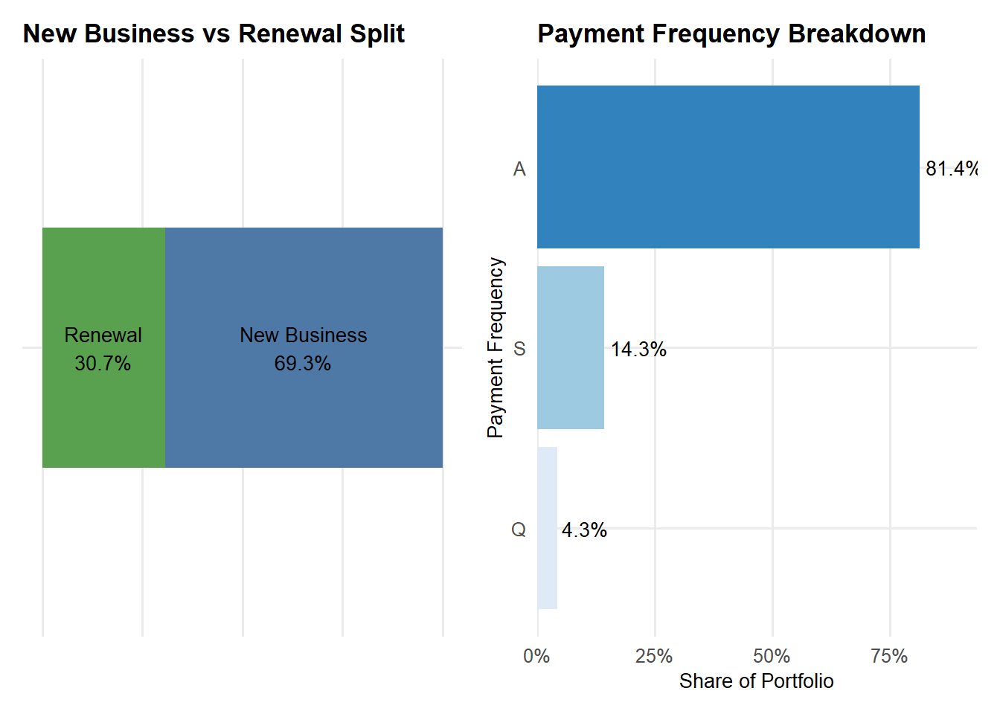
p_fuel <- ins_clean %>%
count(fuel_label) %>%
mutate(
fuel_label = fct_reorder(fuel_label, n),
pct = n / sum(n)
) %>%
ggplot(aes(x = pct, y = fuel_label, fill = fuel_label)) +
geom_col(show.legend = FALSE) +
geom_text(aes(label = percent(pct, accuracy = 0.1)), hjust = -0.1, size = 3.5) +
scale_fill_manual(values = fuel_colours) +
scale_x_continuous(labels = percent_format(),
expand = expansion(mult = c(0, 0.15))) +
labs(title = "Fuel Type Composition",
x = "Share of Portfolio", y = NULL) +
theme_ins
p_area <- ins_clean %>%
count(area_label) %>%
mutate(
area_label = fct_reorder(area_label, n),
pct = n / sum(n)
) %>%
ggplot(aes(x = pct, y = area_label, fill = area_label)) +
geom_col(show.legend = FALSE) +
geom_text(aes(label = percent(pct, accuracy = 0.1)), hjust = -0.1, size = 3.5) +
scale_fill_manual(values = c("Urban" = "#4E79A7", "Rural" = "#59A14F")) +
scale_x_continuous(labels = percent_format(),
expand = expansion(mult = c(0, 0.15))) +
labs(title = "Circulation Area Composition",
x = "Share of Portfolio", y = NULL) +
theme_ins
p_fuel + p_area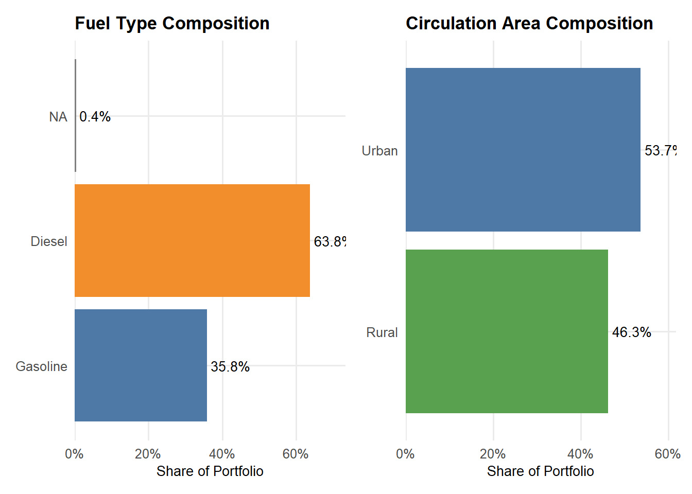
ins_clean %>%
filter(!is.na(policy_type)) %>%
mutate(policy_type = fct_reorder(policy_type, loss_ratio, .fun = median)) %>%
ggplot(aes(x = policy_type, y = loss_ratio, fill = policy_type)) +
stat_halfeye(
adjust = 0.5, justification = -0.2,
.width = 0, point_colour = NA, alpha = 0.7
) +
geom_boxplot(width = 0.15, outlier.shape = NA, colour = "grey30") +
stat_dots(side = "left", justification = 1.1,
binwidth = 0.008, dotsize = 1.5) +
geom_hline(yintercept = 1, linetype = "dashed",
colour = "red", linewidth = 0.7) +
scale_fill_manual(values = policy_colours) +
scale_y_continuous(labels = percent_format()) +
coord_flip() +
labs(title = "Loss Ratio Distribution by Policy Type",
subtitle = "Red dashed line = break-even (LR = 1); raincloud shows full distribution",
x = NULL, y = "Loss Ratio") +
theme_ins +
theme(legend.position = "none")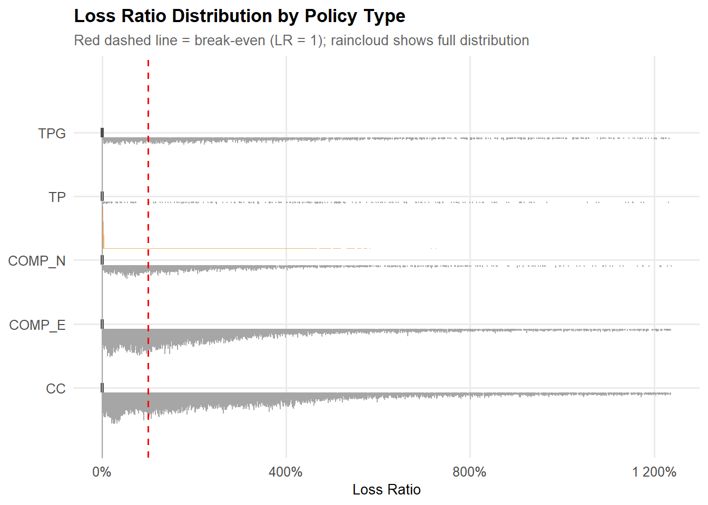
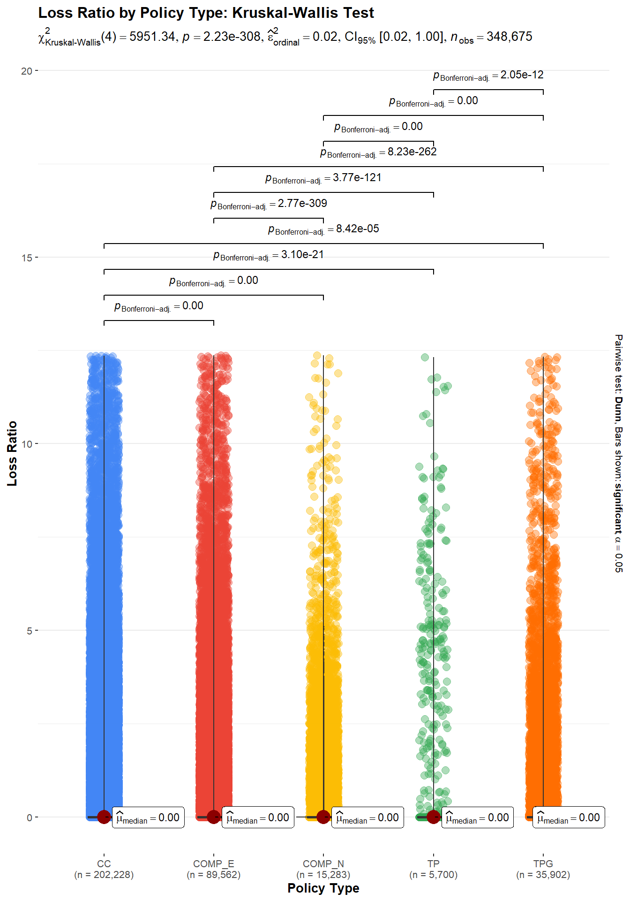
ins_clean %>%
filter(!is.na(driver_age_group)) %>%
ggplot(aes(x = driver_age_group, y = loss_ratio, fill = driver_age_group)) +
stat_halfeye(adjust = 0.5, justification = -0.2,
.width = 0, point_colour = NA, alpha = 0.7) +
geom_boxplot(width = 0.15, outlier.shape = NA, colour = "grey30") +
geom_hline(yintercept = 1, linetype = "dashed",
colour = "red", linewidth = 0.7) +
scale_fill_brewer(palette = "Spectral") +
scale_y_continuous(labels = percent_format()) +
coord_flip() +
labs(title = "Loss Ratio by Driver Age Group",
subtitle = "Younger and older drivers typically exhibit higher, more volatile loss ratios",
x = "Driver Age Group", y = "Loss Ratio") +
theme_ins +
theme(legend.position = "none")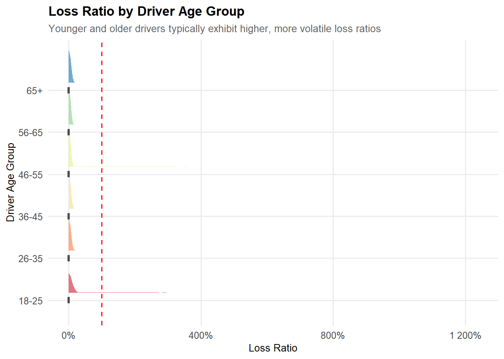
heatmap_data <- ins_clean %>%
group_by(area_label, fuel_label) %>%
summarise(
mean_lr = mean(loss_ratio, na.rm = TRUE),
n = n(),
.groups = "drop"
) %>%
filter(!is.na(area_label), !is.na(fuel_label))
ggplot(heatmap_data,
aes(x = fuel_label, y = area_label, fill = mean_lr)) +
geom_tile(colour = "white", linewidth = 0.8) +
geom_text(
aes(label = paste0(percent(mean_lr, accuracy = 0.1),
"\n(n=", comma(n), ")")),
size = 3.2, fontface = "bold"
) +
scale_fill_gradient2(
low = "#59A14F", mid = "#FFFF99", high = "#E15759",
midpoint = 1,
labels = percent_format(),
name = "Mean Loss Ratio"
) +
labs(title = "Mean Loss Ratio: Circulation Area × Fuel Type",
subtitle = "Green = profitable (< 100%); Red = unprofitable (> 100%)",
x = "Fuel Type", y = "Circulation Area") +
theme_ins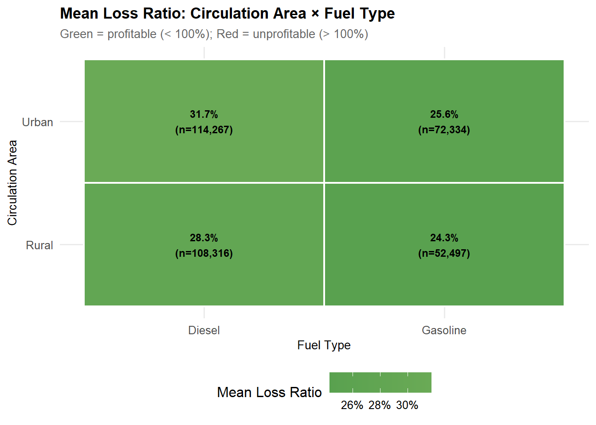
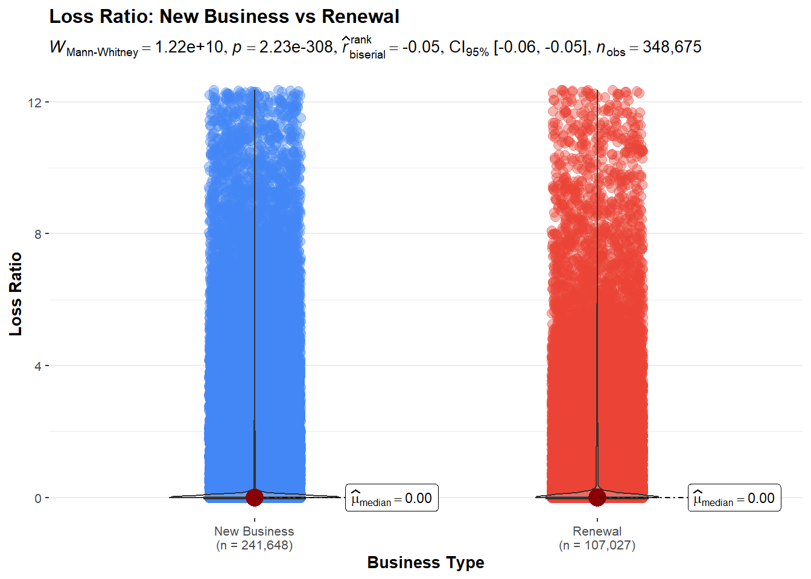
ins_clean %>%
filter(!is.na(fuel_label)) %>%
mutate(fuel_label = fct_reorder(fuel_label, claim_frequency, .fun = median)) %>%
ggplot(aes(x = fuel_label, y = claim_frequency, fill = fuel_label)) +
stat_halfeye(adjust = 0.5, justification = -0.2,
.width = 0, point_colour = NA, alpha = 0.7) +
geom_boxplot(width = 0.15, outlier.shape = NA, colour = "grey30") +
scale_fill_manual(values = fuel_colours) +
coord_flip() +
labs(title = "Claim Frequency Distribution by Fuel Type",
subtitle = "Ordered by median claim frequency",
x = "Fuel Type", y = "Claim Frequency (Claims per Exposure Year)") +
theme_ins +
theme(legend.position = "none")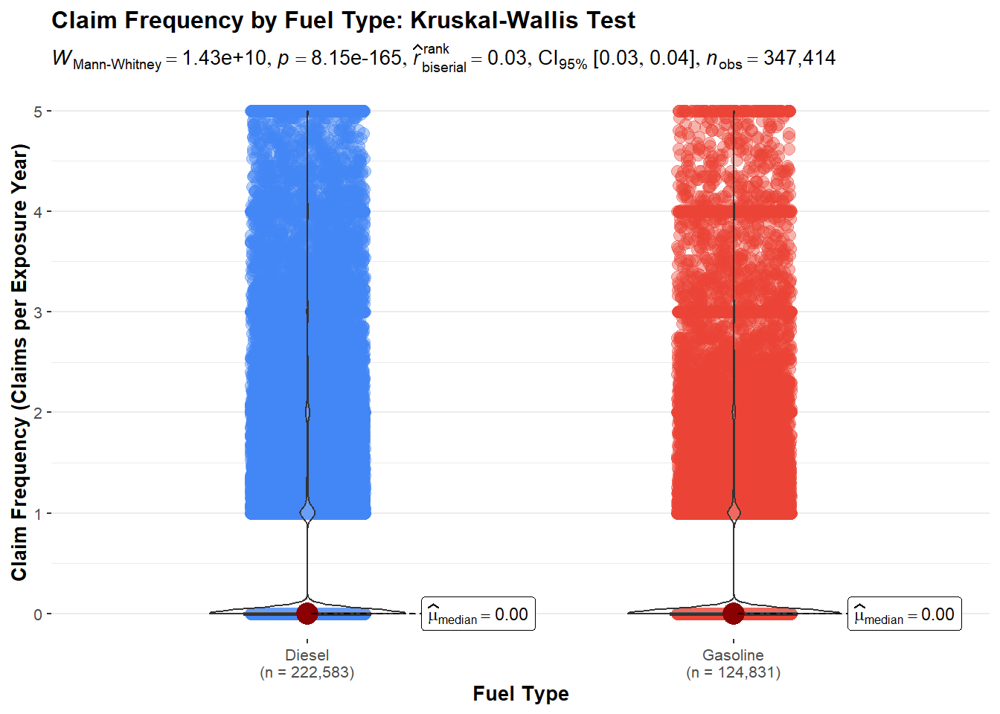
risk_summary <- ins_clean %>%
filter(!is.na(vehicle_age_group)) %>%
group_by(vehicle_age_group) %>%
summarise(
n_policies = n(),
avg_cf = mean(claim_frequency, na.rm = TRUE),
avg_lr = mean(loss_ratio, na.rm = TRUE),
pct_with_claim = mean(total_claims > 0, na.rm = TRUE),
.groups = "drop"
)
ggplot(risk_summary,
aes(x = avg_cf, y = avg_lr,
size = n_policies, colour = vehicle_age_group)) +
geom_point(alpha = 0.85) +
geom_hline(yintercept = 1, linetype = "dashed", colour = "grey40") +
geom_text_repel(aes(label = vehicle_age_group), size = 3.5, show.legend = FALSE) +
scale_size_continuous(name = "Policy Count", range = c(4, 16)) +
scale_colour_brewer(palette = "Set2", guide = "none") +
scale_x_continuous(labels = number_format(accuracy = 0.01)) +
scale_y_continuous(labels = percent_format()) +
labs(title = "Risk Profile by Vehicle Age Group",
subtitle = "Top-right = high frequency & high loss ratio (worst segment); dashed = break-even",
x = "Average Claim Frequency",
y = "Average Loss Ratio") +
theme_ins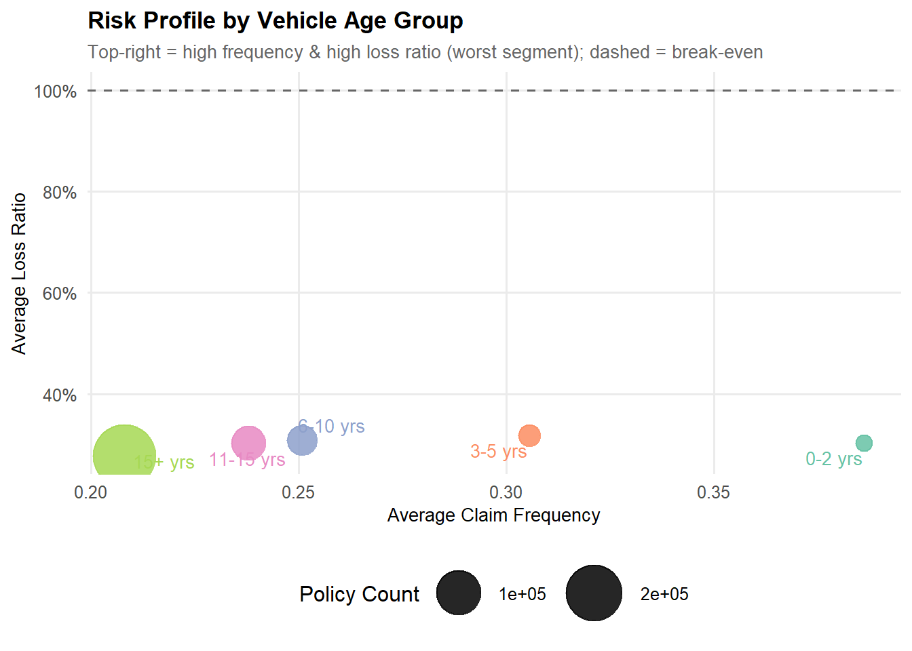
bonus_median <- ins_clean %>%
filter(!is.na(bonus_score)) %>%
group_by(bonus_score) %>%
summarise(med_lr = median(loss_ratio, na.rm = TRUE)) %>%
arrange(desc(med_lr))
ins_clean %>%
filter(!is.na(bonus_score)) %>%
mutate(bonus_score = factor(bonus_score,
levels = bonus_median$bonus_score)) %>%
ggplot(aes(x = loss_ratio, y = bonus_score,
fill = stat(quantile))) +
stat_density_ridges(
geom = "density_ridges_gradient",
calc_ecdf = TRUE, quantiles = 4, quantile_lines = TRUE
) +
geom_vline(xintercept = 1, linetype = "dashed",
colour = "red", linewidth = 0.7) +
scale_fill_manual(
name = "Quartile",
values = c("#d4f1c5", "#c0c0c0", "#c0c0c0", "#f7b6b6")
) +
scale_x_continuous(labels = percent_format()) +
labs(title = "Loss Ratio by Bonus-Malus Score",
subtitle = "Ordered by median LR; bonus score reflects prior claim history",
x = "Loss Ratio", y = "Bonus Score") +
theme_ins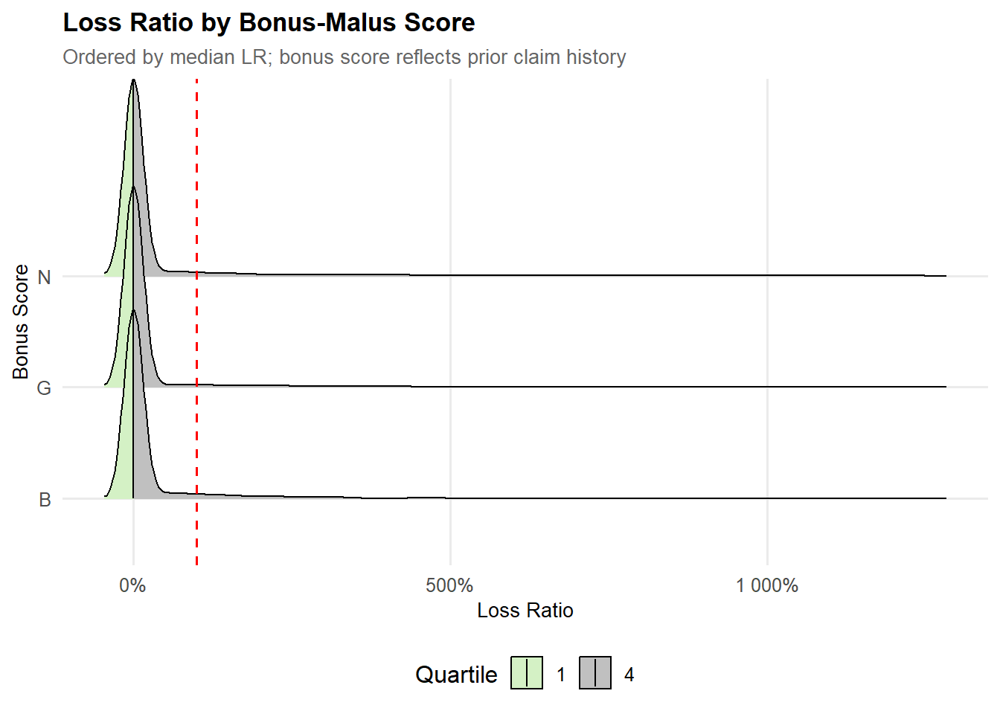
cor_vars <- ins_clean %>%
select(driver_age, vehicle_age, vehicle_value,
power_to_weight_ratio, seats,
total_premium, total_incurred, total_claims,
total_exposure, loss_ratio, claim_frequency) %>%
drop_na()
cor_matrix <- cor(cor_vars, method = "spearman")
corrplot(
cor_matrix,
method = "color",
type = "upper",
tl.col = "black",
tl.srt = 45,
tl.cex = 0.85,
addCoef.col = "black",
number.cex = 0.7,
col = colorRampPalette(c("#E15759", "white", "#4E79A7"))(200),
title = "Spearman Correlation Matrix",
mar = c(0, 0, 2, 0)
)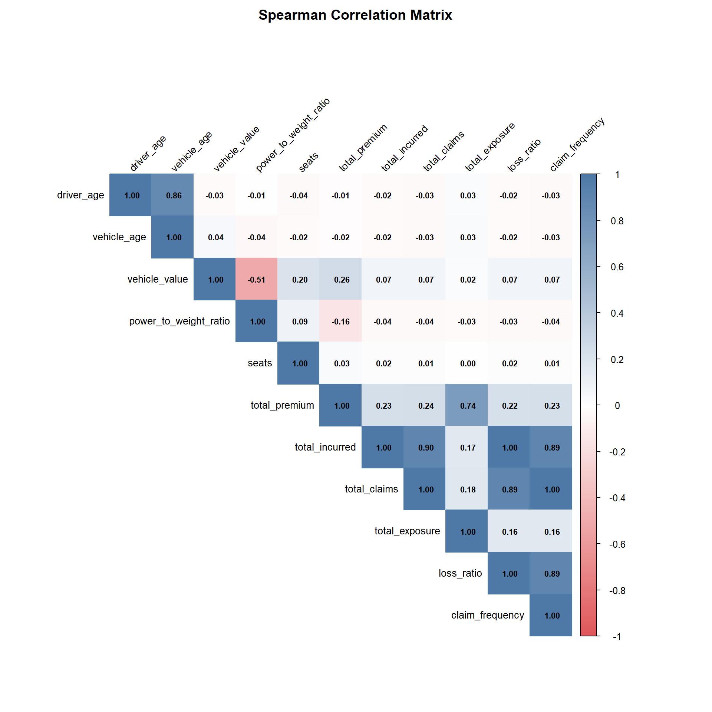
claim_rate_data <- ins_clean %>%
filter(!is.na(business_label), !is.na(payment_frequency)) %>%
group_by(business_label, payment_frequency) %>%
summarise(
n_policies = n(),
claim_rate = mean(total_claims > 0, na.rm = TRUE),
.groups = "drop"
) %>%
mutate(
se = sqrt(claim_rate * (1 - claim_rate) / n_policies),
lower = claim_rate - 1.96 * se,
upper = claim_rate + 1.96 * se
)
ggplot(claim_rate_data,
aes(x = payment_frequency, y = claim_rate,
fill = business_label)) +
geom_col(position = "dodge", colour = "white", alpha = 0.85) +
geom_errorbar(
aes(ymin = lower, ymax = upper),
position = position_dodge(0.9), width = 0.2
) +
scale_fill_manual(
values = c("New Business" = "#4E79A7", "Renewal" = "#59A14F"),
name = "Business Type"
) +
scale_y_continuous(labels = percent_format()) +
labs(title = "Claim Incidence Rate by Business Type and Payment Frequency",
subtitle = "Error bars = 95% confidence intervals; non-overlapping bars indicate significant differences",
x = "Payment Frequency", y = "Proportion of Policies with a Claim") +
theme_ins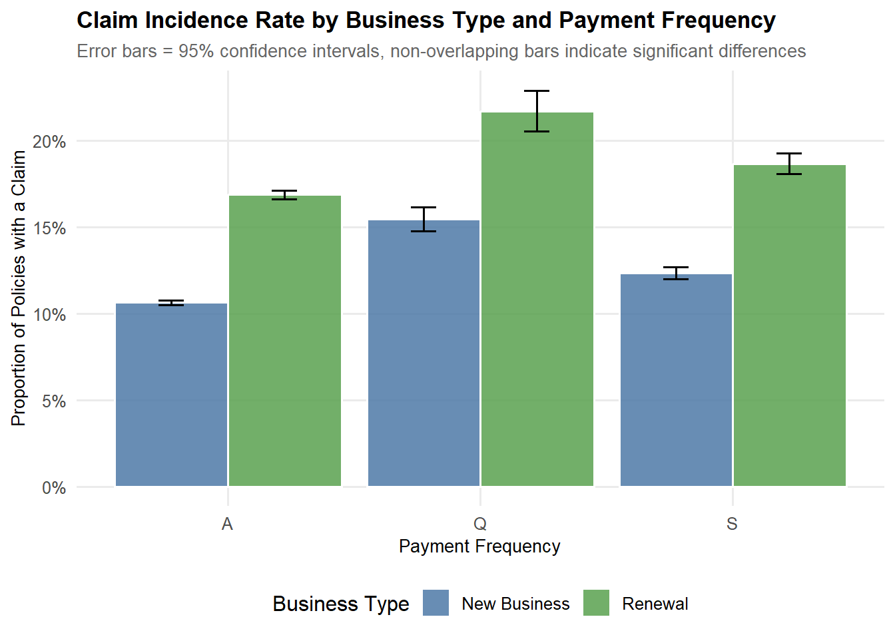